日度、周度、月度共用一条纵向时间轴。以文字为主，不再把照片和复盘挤进左右两栏。洞察从「数字堆在一起」改为记录覆盖、趋势、逐项比较与可核对的观察。本轮仍然没有发布或替换本地 App。
周度连续浏览 → 月度复盘 → 每日照片记录 → 洞察概览 → 逐日探索 → 各习惯比较。字幕仅是录屏说明，不是应用里的常驻内容。
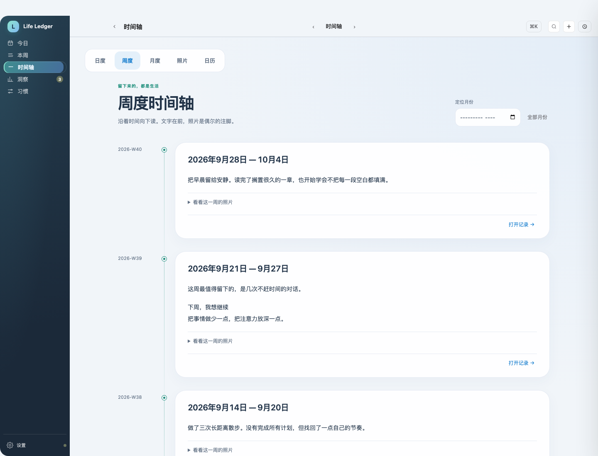
不再点击左边一周、右边换一页。每周的文字直接展开，连续往下看。月份定位包括跨月的周；「全部月份」恢复全局浏览。每次先展示 24 条，继续向前翻时再加载更多。周照片是可选注脚，只有展开时才读取；不重复上传或存储。
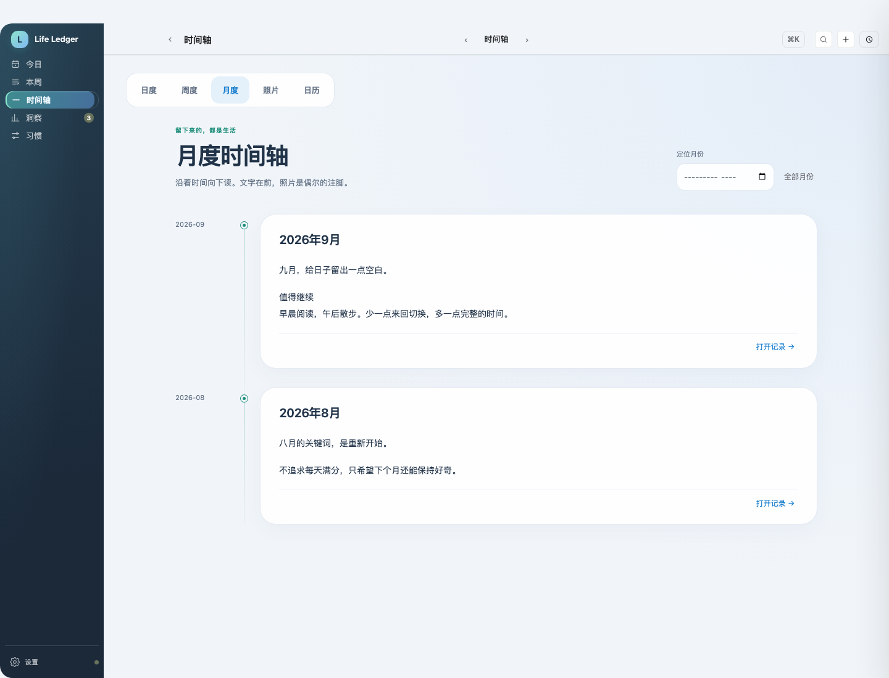
直接读取原有月复盘，不生成新副本，不把整个月的照片再复制一遍。打开记录可以回到对应月份继续写。
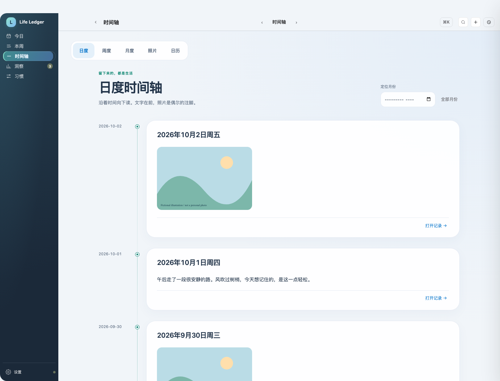
原来的心情图标与照片功能继续复用。照片库、日历入口仍在；点开一天可以进入已有的每日记录面板。
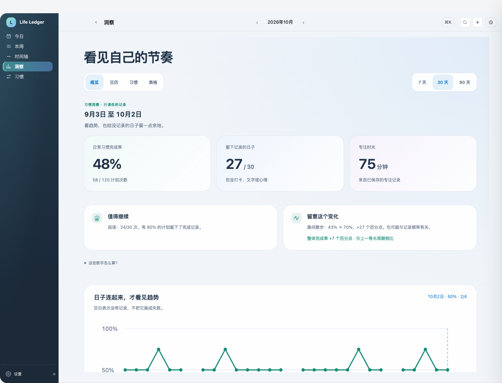
上面分开看「日常完成率」「有记录的天数」「专注时间」。下面是有证据才能出现的观察：哪个习惯值得继续、哪项变化值得留意。本期与上一等长周期都至少有 7 天记录才比较变化，不把相关性写成因果。
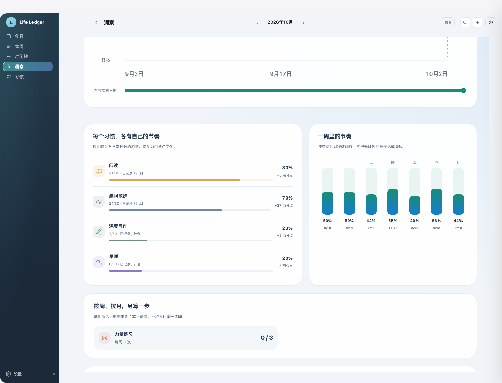
复用原习惯图标。趋势可以通过鼠标或键盘逐日探索，未记录的日子断开留白；日历视图也区分空白与 0%。周／月目标单独展示，不混入日常评分。数字的计算说明可以展开查看，所有分析在本地完成，不调用付费模型。
时间轴
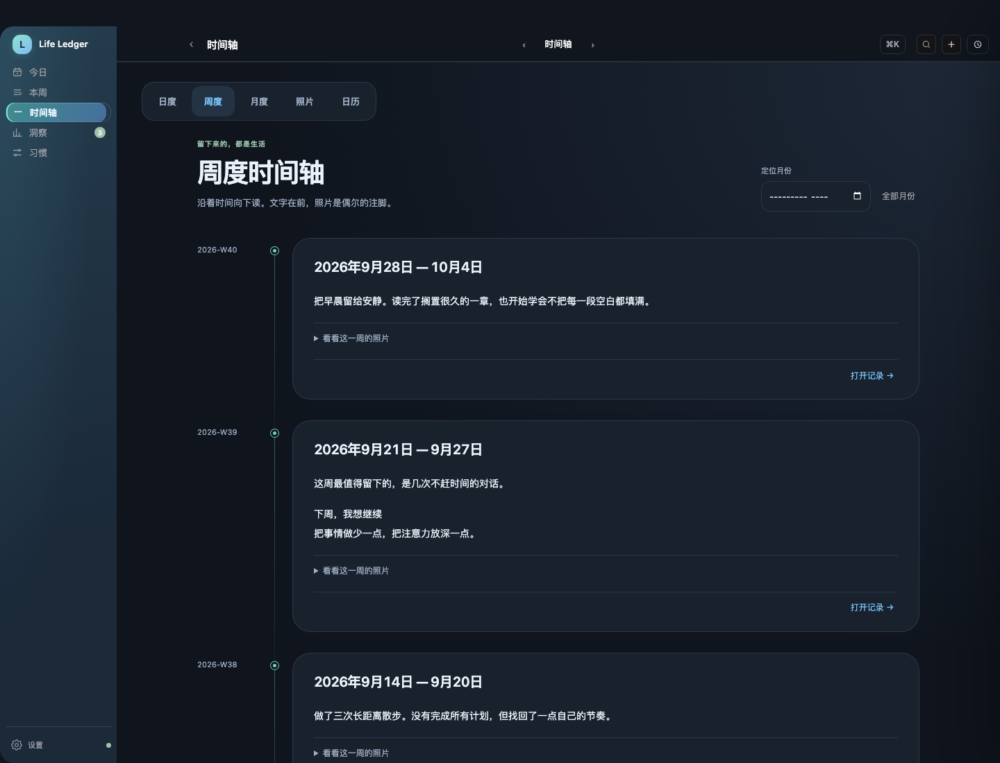
洞察
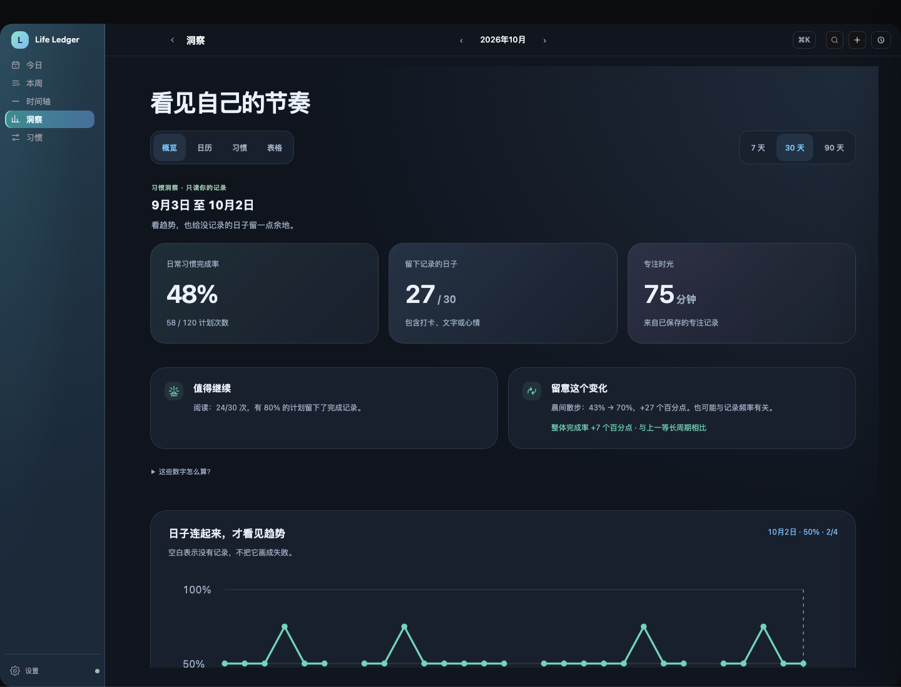
English desktop
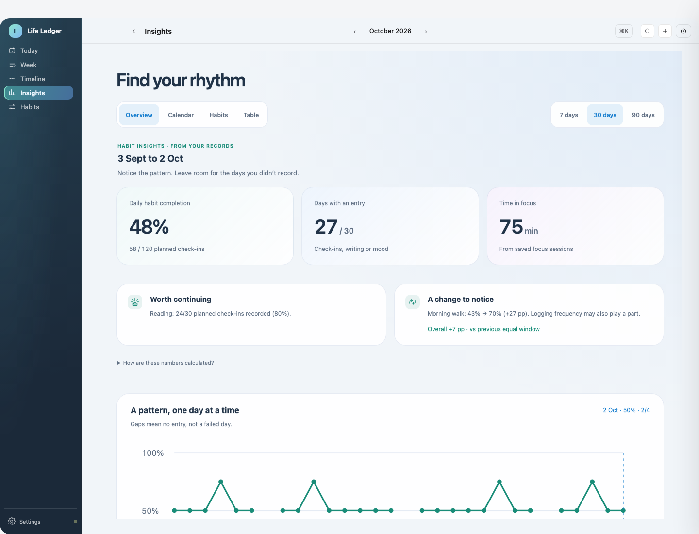
Deutsch desktop
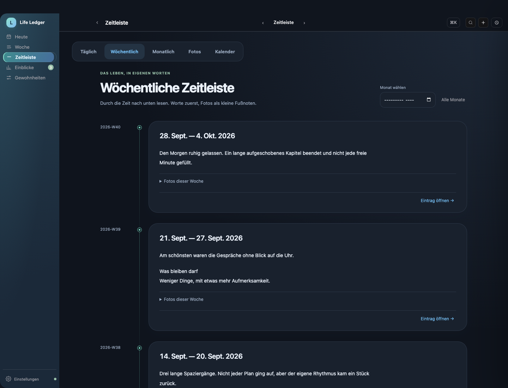
中文 mobile
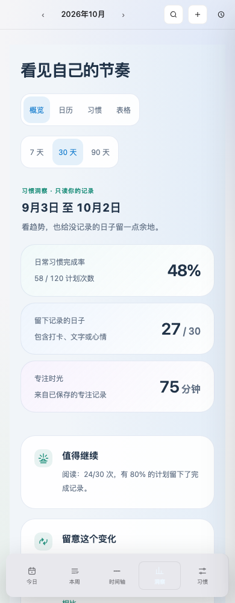
English mobile
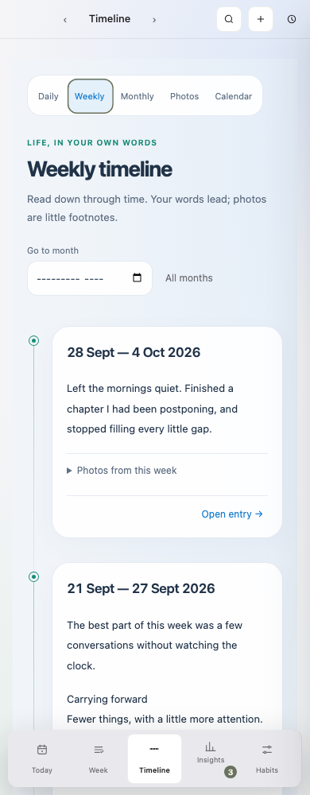
Deutsch mobile
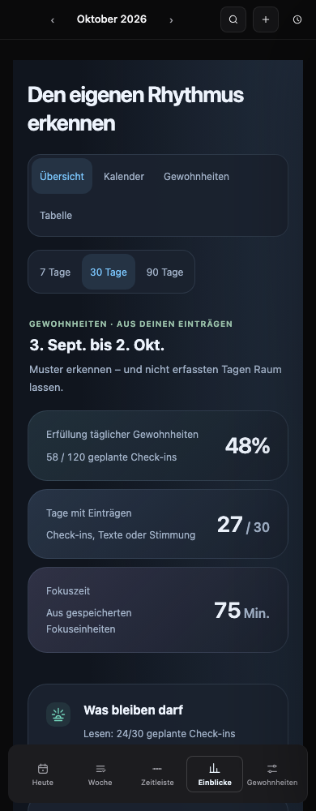
900px window
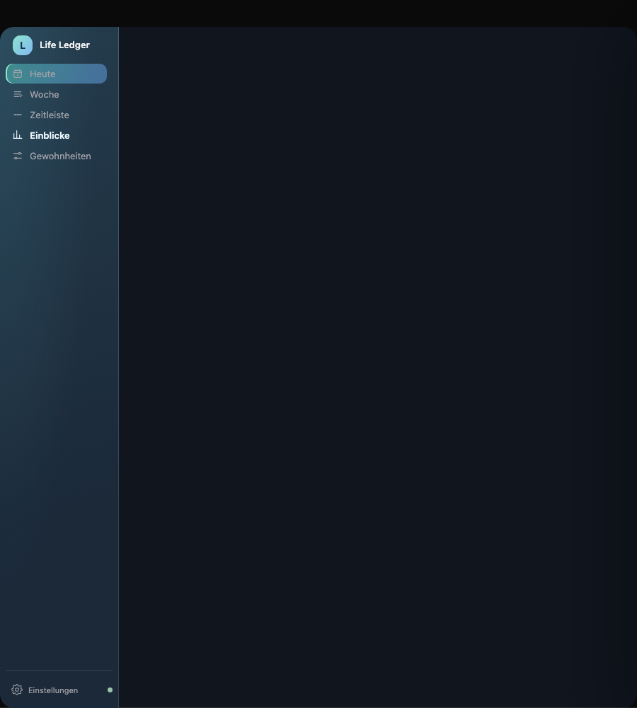
参考 Loop Habit Tracker 的非唯连续天数思路，以及 OpenHabitTracker 的目标周期、逐习惯统计和星期分布。两者为设计参考，没有复制其 GPL 源码；这轮没有增加依赖，也没有冒充实现它们的完整评分系统。
截图与录屏来自实际应用路径，使用虚构文字和明确标注的 SVG 照片插图，不含私人数据。测试覆盖三语言、深浅色、窄窗口与低动态；不等于已经验收原生 macOS 包或所有历史功能。本轮交互结果 · 口径、限制和检查记录。